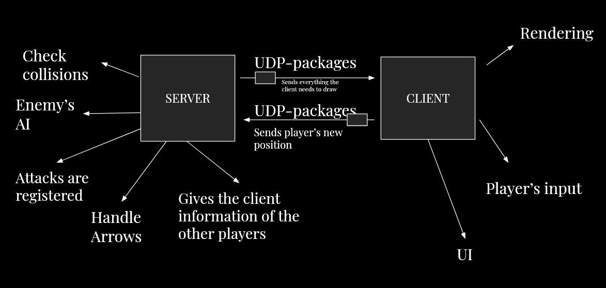
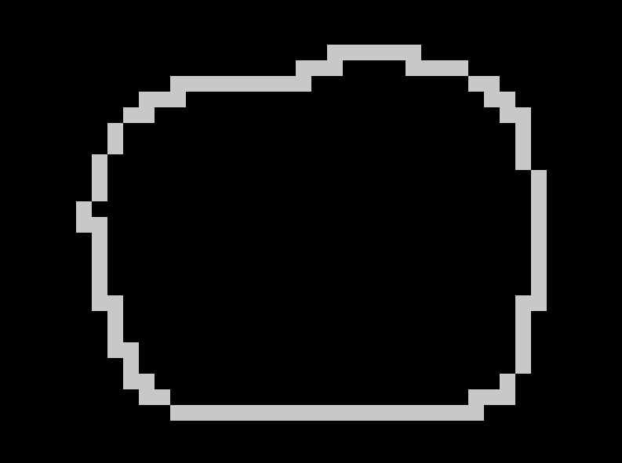
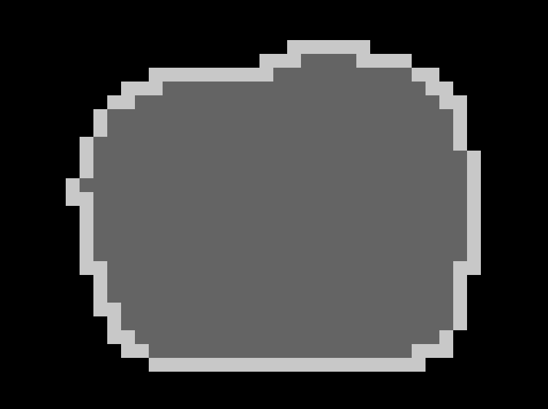
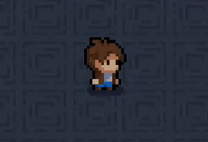
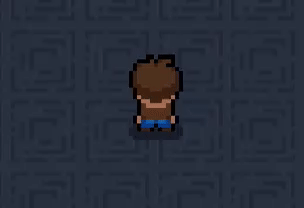

Introduction
This game is a prototype of a multiplayer MMO game, meaning that every player can enter the game with its own client and play with other people, also with their own client
Motivation and plan
Recently CS teacher gave my class an assignment to make a game from scratch using python.
As someone who's already made a bunch of small singleplayer games,
(the ones i've shared are only the tip of the iceberg-Lots of small demos I've made are still somewhere in my file system),
I was quite bored and unmotivated to the idea of making another one; So to make the assignment less boring and to push myself a bit,
I decided to make a multiplayer game inspired by Mythfall
...and yeah, you can probably see the influence.
Game Plan
- The game will support multiplayer functionality.
- The player takes the role of a dungeon, created using a custom map editor.
- Progression is room-based: players are locked in a chamber until all enemies are defeated.
- Diverse enemy types will be featured for combat variety.
- Players can “slide” or dash to a location based on mouse input for dynamic movement.
- The game should be programmed in a modular way, because I'll likely expand upon it
Why is the game called 'Infinite doppelganger'?
At the start of the project, my teached asked me the name of the game. Since initially the game should have been an infinite procedurally generated dungeon, with a copy of yourself as boss, it made complete sense to call it "Infinite Doppelganger". Shortly after, the scope of the game greatly reduced, but probably due to lazyness the name stuck
Architecture

Since the game is multiplayer, I needed three main components: a client that each player runs, a server to maintain the global game state (including other players’ data), and an efficient way to pass information between the two.
This led me to explore the dilemma of how to handle communication between the client and server, which ultimately came down to choosing between UDP and TCP.
TCP vs UDP
TCP (Transmission Control Protocol)
In short, TCP creates a stable, reliable connection between the client and server. Every message sent is guaranteed to arrive, and if it doesn't, it will be resent until it does. This reliability comes at a cost: latency. Because of all the checks and handshakes involved, TCP is relatively slow—especially for real-time multiplayer games.
I initially chose TCP for its reliability, assuming it would help maintain stable communication. However, I ran into issues almost immediately. When running the client with a different connection, the game barely worked at all. And since TCP treats messages as a stream of data rather than discrete packets, it was also awkward to work with for my game’s needs.
UDP (User Datagram Protocol)
UDP, in contrast, is a connectionless protocol. There’s no handshake, and packets are sent individually with minimal overhead with just a basic checksum. If a packet is lost or corrupted, it’s simply dropped. There’s no retry, making UDP technically "unreliable."
Because of this, UDP is fast, and it is what i actually used in the game, as it's not a big deal to have a lost message.
The problem with JSON
Even after switching to UDP, the game still felt 'slow', After digging in a little, I've realized that this was because of how I was packaging data.
In my web development projects i've always used JSON to retrieve and package data from APIs using it, so i was surprised to know how JSON is inefficient. Under the hood, JSON serialize every kind of data into strings (UTF-8) and not actual binary, this means that for example a player's position, e.g 125, which can be easily represented with 7 bits, will be serialized as "125" (that is 8 bit per digit).
After speaking to the author of Mythfall, who implemented his own binary serialization format tailored for his game, I decided to switch to a similarly quick BSF, MsgPack.
Client and Server
In the architecture section, i explained what protocols and libraries i used for the project, here i want to go (a little) deeper about how the server and client work
Server
The game uses generally an autoritative
server model, that is,
the server handles the whole game state (store/update/generate enemies,arrows and players), but in my case the player is trusted
when it comes to movement in order to reduce latency (i'll about this later), making it actually an hybrid model.
The server has two threads working in unison, sharing data as they need (this involved the use of mutex btw).
The first one handles updates the game state, e.g generates
enemies, updates arrows and so on.
The other thread handles the networking phase - it takes and unpackage the data sent from the player, updates the players, disconnect a player that does not send data for a while, and sends the game state data to the client.
Client
The main job of the client here is to draw everything and to handle the player.
The client works by first taking the player movement and input (This is also includes if the player need to draw an arrow, as
the client cannot generate anything, it needs to tell server to do that), it serialize and sends them to the server,
and takes and draws what it receives from the
server.
Why raylib?
The choice of raylib for the drawing part comes down to two main reasons
- I'm used to work with raylib, i know exactly what function to use and where do i need to go when i don't know something
- The main alternative here is pygame, that from my experience has a lot of useless boilerplate,
In the game i've actually used the python bindings for raylib, which are much worse performance wise, though given how used i am working with raylib, i think it was a worthy deal
Dungeon
What is the dungeon
In the game, the dungeon is a grid-based map composed of different chambers that the player progresses through.
Under the hood, the dungeon is a fixed-size numpy matrix,
where each number in the matrix represents a tile ID, which the client and server interpret according to the following mapping:
- Empty tile — black void
- Wall tile — blocks player movement
- Spawn tile — player start position
- Floor tile — standard walkable tile
- Chamber division — separates rooms
- Boss spawner — triggers boss fights
- Unused / reserved — currently unused
- Inner wall — structural variation of walls
These tiles can be placed using the editor by clicking on the map
after having selected the tile, with the resulting matrix being saved using
np.save("maps/" + map_name, map)
By the way, to make the map making process less frustrating, i've also implemented a DFS to fill the map. The process is really simple, when you click 'p' on certain tile, the algorithm first change the tile id into 3, and searches on each side (up, down, left, right) another tile with id 0 (the empty tile) and if it is unvisited, it adds to the list of unvisited tiles; It then takes the first tile from that list, and the process repeats until the list is empty (the code is similar to the blocksWith1 function below)
 How does the server know where to spawn enemies
When the server starts, it loads the map matrix using np.load(path) and runs an iterative
DFS (Depth First Search) treating 'chamber division' tiles as boundaries that prevent traversal between rooms.
This allows the game to identify each distinct room.
Enemies are spawned dynamically only in nearby,
unexplored chambers, ensuring the game world feels reactive and prevents unnecessary server load.
If you are interested, here's the code:
def blocksWith1(map, visited, pos, mapInts, typeIsl = 0):
queue = []
queue.append(pos)
result = []
spawnPoint = -1 # The spawnPoint tells if the island has boss tile, a spawn tile, or neither.
while len(queue) != 0:
cPos = queue.pop()
if (cPos[0] <= 1 or cPos[0] >= map.shape[0]-2 or cPos[1] <= 1 or cPos[1] >= map.shape[1]-2):
continue
# Checking in all directions if there is a spawn/boss tile, since cPos is always a floor tile
if map[cPos[0]+1][cPos[1]] == 2 or map[cPos[0]-1][cPos[1]] == 2 or map[cPos[0]][cPos[1]+1] == 2 or map[cPos[0]][cPos[1]-1] == 2:
spawnPoint = 0
if map[cPos[0]+1][cPos[1]] == 5 or map[cPos[0]-1][cPos[1]] == 5 or map[cPos[0]][cPos[1]+1] == 5 or map[cPos[0]][cPos[1]-1] == 5:
spawnPoint = 1
# This checks if the cPos is visited, if so continuing the algorithm would lead to an infinite loop
if map[cPos[0]][cPos[1]] == 1 or map[cPos[0]][cPos[1]] == 4 or visited[cPos[0]][cPos[1]]:
continue
result.append(cPos) # Adds the position to the resulting island
visited[cPos[0]][cPos[1]] = True
mapInts[cPos[0]][cPos[1]] = typeIsl
if map[cPos[0]+1][cPos[1]] == 3:
queue.append((cPos[0]+1, cPos[1]))
if map[cPos[0]-1][cPos[1]] == 3:
queue.append((cPos[0]-1, cPos[1]))
if map[cPos[0]][cPos[1]+1] == 3:
queue.append((cPos[0], cPos[1]+1))
if map[cPos[0]][cPos[1]-1] == 3:
queue.append((cPos[0], cPos[1]-1))
return result, spawnPoint
def loadMap(self, mapName):
self.map = np.load(mapDir / mapName)
self.islands = []
visited = np.zeros(self.map.shape, dtype=bool)
mapInts = np.zeros(self.map.shape, dtype=int)
n_islands = 0
for i in range(self.map.shape[0]):
for j in range(self.map.shape[1]):
if not visited[i][j] and self.map[i][j] == 3:
n_islands += 1
islands, spawnPoint = blocksWith1(self.map, visited, [i, j], mapInts, n_islands) # blocksWith1 is the DFS
if spawnPoint == 0: # It means that there is no spawnPoint
continue
if spawnPoint == 1: # That means there was a tile with id = 5
self.bossIsland = islands
continue # I don't want to add the island with the boss inside all other island
self.islands.append(islands)
self.islands_id.append(n_islands)
if len(self.islands[-1]) < 50: # If its too small, there is no reason to keep it
self.islands = self.islands[:-1]
else:
self.centers.append(self.takeCenter(self.islands[-1])) # The center will be used to determine if the player is closed enough to an island
self.mapInts = mapInts
print(self.map.shape)
How about collisions?
Because the map is represented as a matrix, checking a collision is really simple: Given an NxM map where each tile is T*T,
if the tile in the player/enemy/arrow position is at x/T, y/T,
and if it is different than 3(the floor tile), then there is a collision.
Particle system
How it works
The particle system is entirely managed by the client, meaning that the particles are not transferred between client and server. This happens because as the particle
system generates lots of particles every second, sending each to the server every time would generate a big and evitable load, slowing down the whole game.
The particle system under the hood works with a main class which is used by every part of the client to add particles.
Each particle has its own direction (unlike in
Moon lander, the direction remain the same, and not interpolated between two),
color (not interpolated), and size, that slowly diminuish using the formula SIZE*(1 - time/MAX_PARTICLE_TIME), in this way the particle appears to 'fade' over time.
If you're interested, the code is in
client/ParticleSystem.py
How it is used
The main reason I implemented a particle system was to improve what game designers often refer to as game feel—that sense of responsiveness and immersion that makes actions in a game feel satisfying.
Typically, game feel is improved through a combination of animations, sound design, and environmental interactions. But since I can't draw or compose music—and AI tools are improving but still not free—I leaned heavily on particles to fill that gap. By using them generously in movement, combat, and interactions, I was able to create a visual feedback loop that feels dynamic and reactive, even with limited resources. I think it worked out pretty well.


Player
Movement
The player's movement is mostly processed inside the client, as it checks collisions,
change xy position based on the input and do the 'sliding' behavior when it needs to.
The movement was pretty straightforward, as it simply checks weather WASD is pressed changing direction and position accordingly.
Player collisions are checked here before moving the player to avoid going back later (a decently error-prone problem to work on). The movement
is not validated in the server, making the game easier to cheat in, but since it is not a competitive game, the trade of is worth it.
Sliding

The sliding you see in this gif is implemented using the following algorithm
- Detect when right click is being released
- Converts the mouse position into maps position
- Creates a function that interpolates time with the start position (player one) and the mouse position
- This function changes the player position untill the time since right was released arrive to 1, then the sliding function becomes None and the player can move again
The Interpolation function works by making another function that pass t (time since the right click was released ) throught a polynomial function that starts at 0 and ends at 1, and then passing the new t into a linear interpolation function plus some trig functions to help create the 'swing' effect
The result is a smooth movement that gives the impression of a skillful dodge or slide. Here's the core logic:
def createPortalFunction(startPos, endPos, lastDir=0):
dist = math.dist(startPos, endPos)
maxDist = 2.7
# As you can see in the video, if the position of the mouse is too far way, it clamp it into maxDist's range
if dist > maxDist:
diff = [(endPos[0]-startPos[0])/dist, (endPos[1]-startPos[1])/dist]
endPos = [startPos[0] + diff[0]*maxDist, startPos[1] + diff[1]*maxDist]
smoothstep = lambda t : 3*t**2 - 2*t**3
def f(t):
t = smoothstep(t)
x = startPos[0]*(1-t) + endPos[0]*t + (math.sin(math.pi*t) if lastDir != 3 else -math.sin(math.pi*t))
y = startPos[1]*(1-t) + endPos[1]*t
return (x, y) # New player position
return f
As you can see the createPortalFunction returns another function that takes the current time and returns the new position.
Conclusion
Making Infinite Doppelganger was a formative experience, as it helped me to think better about the technologies I choose and to be really thoughtful about it at the start of any project.
What you see in the article is only how the project ended up, but the structure and the code was revised and changed a lot of times as
needs changed and problems emerged.
A mayor example of this is probably the intial choise to use the TCP/JSON stack in the networking phase. I didn't
really understood how unefficient the stack was until i tried to play the game under a different router!.
Another interesting example is that
initially the server game state handling and the packet handling phase were initially done in the same thread. That caused the
game to feel quicker as the number of sent packages increased - likely due by the increase in server calls, that in turn increased the number of
updates making the game feel faster, even with delta time integrated into the system.
This write-up focuses on the parts of Infinite Doppelganger I found most interesting. I left out simpler elements like enemy and projectile behavior — but if something key is missing, that wasn’t intentional.
If you want some part of the game to be better/entirely explained, I'm open to suggestions, the email is in the portfolio page.